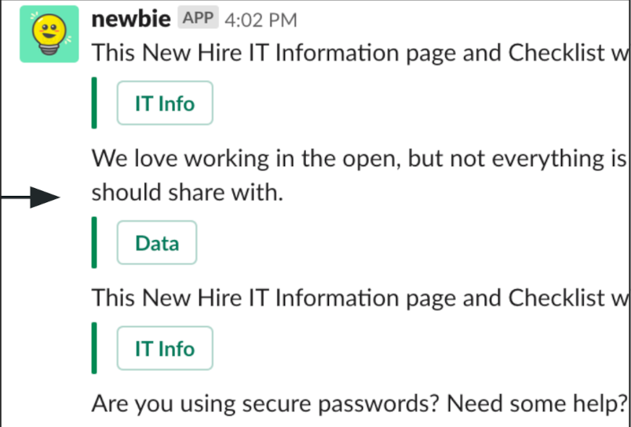
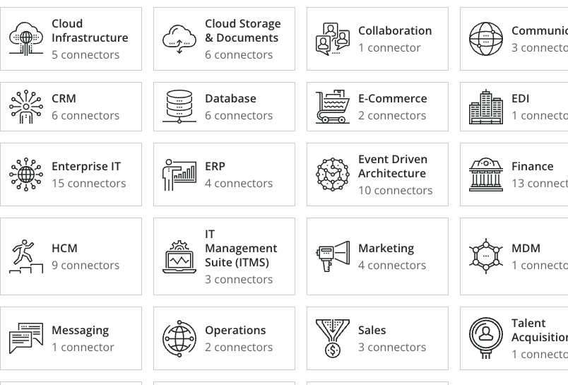
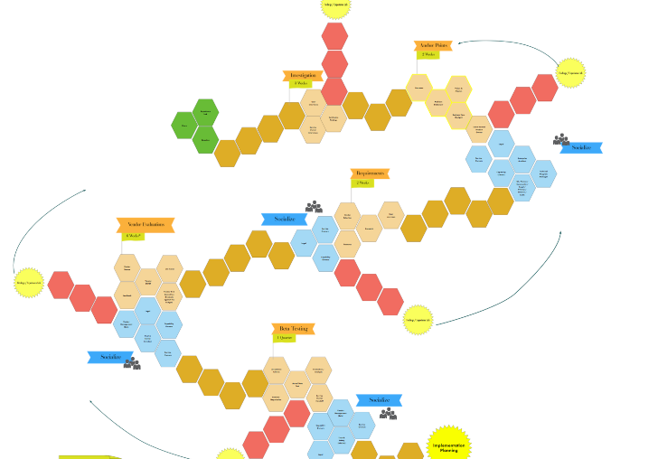
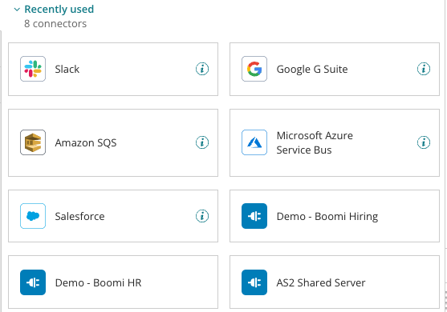
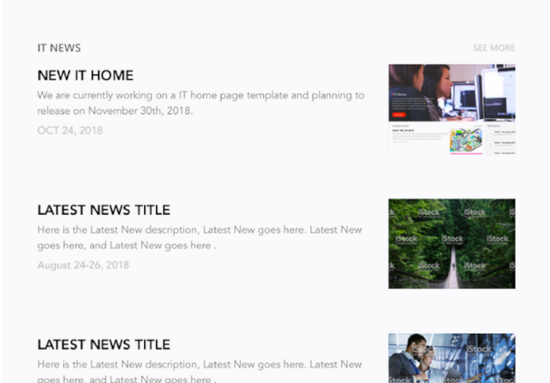
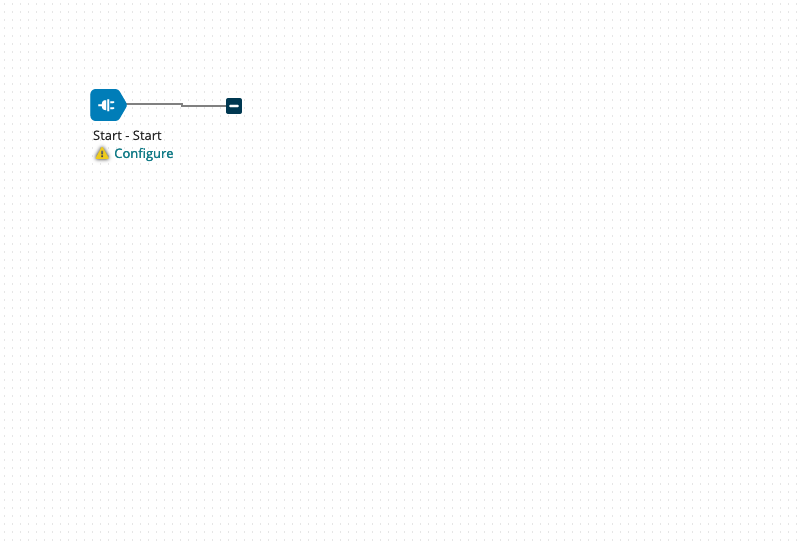

About
Hi, my name is Josephine Leung (prounounced like "learn"). I started Hayvue so I could help artists and designers balance the creative and practical sides of their art – from iterating a current work to persisting through roadblocks to realizing their vision to delivering their art to their clients or colleagues.
I’ve always had a talent for helping people tap into their creativity and flesh out their ideas into a workable and presentable form. As a creative myself and someone who is so deeply moved by art in various forms, I understand the creative mind and the various struggles that creatives encounter. There is nothing quite like the gratification of persisting through a creative block and generating art that previously only existed as an idea or a feeling or a thought. It is this perseverance that I aim to help creatives with throughout their journey as working artists.
I spent several years doing this for Technology companies as a product manager – creating a product while balancing the product vision with business demands. This usually involved taking a vague idea and giving it shape and substance; collaborating with various teams; navigating around roadblocks; conducting research; and working within a framework of aggressive efficiency to refine, market, develop, and launch products and features. After many years, I realized I wanted to apply my skills to the creative world and help artists and designers materialize their vision.
In my spare time, I love learning couture sewing, knitting, and consuming art in various forms: films, writing, architectural spaces, photography, sculptures, paintings, and installations. As an MLIS-trained librarian, I will forever be a research and book nerd, and I feel antsy when my reading queue is empty.
I named my company Hayvue as a compound word that combines the Chinese word for "early morning light" (hay) with "perspective" in French (point du vue). "Hayvue" signifies the clarity that one feels during the early morning hours.
My skills
- Creative Facilitation
- Prototyping
- Data Analysis
- Research
- User experience
I'm available for new jobs
Get in touchServices
We help creatives using any combination of our services below.
-
Concept Development
Flesh out your ideas, getting it out of your head and into a workable form that we can refine, iterate, and shape into something meaningful
-
Research
Enrich your work with trustworthy, grounding research and the compelling stories that are often contained within accurate facts and data
-
Facilitation
Learn tools and techniques that help accelerate work to the finish line
-
Work Enhancement
Tap into deeper opportunities for your work to resonate with audiences
-
Prototyping
Reduce uncertainty with testing that uncovers the most valuable aspects of your work and how it would behave in real-world scenarios
-
Work Validation
Feel confident executing new ideas with validated research and an implementation plan that everyone can feel good about
Portfolio
View some of our past work with clients in the Technology industry.
-

A Slackbot Enhances the Employee Experience
-

Templates Provide Unexpected Time-to-Value
-

A Re-org Provides Opportunities for Collaboration and Fun
-

A UI Refresh Reduces Task Completion Time
-

A Structured Framework and Empathetic Questioning Provide Fruitful Prototype Testing
-

Keeping a Product Tour Simple
Contact
California
United States